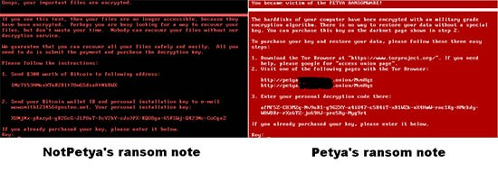
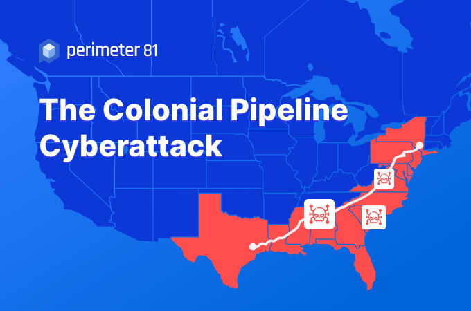

Ransomware é um tipo de software malicioso (malware) que criptografa ou bloqueia o acesso aos arquivos do computador da vítima, exigindo um resgate em troca da liberação dos arquivos. Os ataques de ransomware geralmente são realizados por criminosos cibernéticos que buscam extorquir dinheiro das vítimas.
Como ocorrem os ataques:
Não há uma regra específica para atacar uma máquina com um ransomware, mas existem padrões que podem ser identificados para prevenir esse golpe. Geralmente, o ataque começa com o invasor usando um método para infectar o computador ou a rede da vítima com um software malicioso. Isso pode ser feito por meio de um e-mail de phishing, onde um e-mail enganoso é enviado para a vítima e solicita que ela clique em um link ou abra um arquivo anexo, ou pode ser feito por meio de uma vulnerabilidade no software do sistema ou da rede. Além do e-mail, downloads maliciosos, vulnerabilidades de software ou outras técnicas de engenharia social podem ser usadas para abrir brechas e infectar a máquina.
Após infectar o sistema, o ransomware criptografa os arquivos importantes da vítima, tornando-os inacessíveis sem uma chave de descriptografia, que apenas o invasor possui. Em seguida, o invasor exige um pagamento em troca da chave de descriptografia. O pagamento geralmente é exigido em criptomoedas, como Bitcoin, que são difíceis de rastrear. Se a vítima pagar o resgate, o invasor geralmente fornece a chave de descriptografia e libera o acesso aos arquivos. No entanto, não há garantia de que o invasor cumprirá sua parte do acordo e de que a vítima recuperará seus arquivos. Além disso, pagar o resgate incentiva os invasores a continuar com seus ataques e pode tornar a vítima um alvo para futuros ataques.
Tipos de ransomware:
Ransomware de criptografia: Esse tipo de ransomware criptografa os arquivos do sistema da vítima, impedindo que eles acessem seus próprios dados. O invasor exige um pagamento para fornecer a chave de descriptografia.
Ransomware de bloqueio: Este tipo de ransomware bloqueia o acesso do usuário a todo o sistema ou a parte dele, como o navegador da web, o ambiente de trabalho ou o gerenciador de arquivos. O invasor exige um pagamento para liberar o acesso.
Ransomware de vazamento de dados: Nesse tipo de ataque, os invasores ameaçam expor dados sensíveis da vítima, como informações financeiras, se o pagamento não for feito. O objetivo é coagir a vítima a pagar o resgate para evitar a exposição de dados.
Ransomware de resgate móvel: Esse tipo de ransomware é projetado para dispositivos móveis, como smartphones e tablets. Ele pode criptografar ou bloquear o dispositivo, exigindo um pagamento para liberar o acesso.
Ransomware híbrido: Esse tipo de ransomware combina os recursos de diferentes tipos de ransomware para aumentar suas chances de sucesso. Ele pode, por exemplo, bloquear o acesso aos arquivos e ameaçar vazar informações confidenciais.
Ransomware como serviço (RaaS): O Ransomware como serviço é uma modalidade em que os criminosos alugam ou vendem ferramentas e serviços que possibilitam o ataque. Com essa modalidade, até mesmo pessoas sem conhecimento técnico podem cometer crimes cibernéticos.
Ransomware de resgate duplo: Nesse tipo de ataque, os invasores exigem dois resgates em vez de um, um para fornecer a chave de descriptografia e outro para garantir que os dados criptografados não sejam publicados.
Como se prevenir:
Existem várias medidas que você pode tomar para proteger-se de um ataque de ransomware, incluindo:
Mantenha o software atualizado: Certifique-se de que todo o software do seu computador e dispositivos esteja atualizado com as últimas correções de segurança, pois isso pode ajudar a impedir que invasores explorem vulnerabilidades conhecidas.
Use software antivírus e anti-malware: Instale e mantenha atualizado um software antivírus e anti-malware, que pode ajudar a detectar e bloquear programas maliciosos antes que eles infectem seu sistema.
Faça backup regularmente: Faça backups regulares de seus arquivos importantes, armazenando-os em um local seguro e offline. Isso pode ajudar a minimizar o impacto de um ataque de ransomware, permitindo que você restaure seus arquivos sem pagar o resgate.
Seja cuidadoso com e-mails e links: Tenha cuidado ao abrir e-mails e links de remetentes desconhecidos ou suspeitos, pois isso pode levar a um ataque de phishing ou malware.
Evite baixar arquivos ilegais: Evite baixar arquivos ilegais ou de fontes não confiáveis, pois eles podem conter malware ou ransomware.
Configure direitos de usuário: Configure os direitos de usuário para limitar a capacidade de um invasor de alterar ou criptografar seus arquivos.
Aprenda sobre o ransomware: Aprenda sobre o ransomware e seus métodos de ataque, para que você possa estar mais preparado e saber como responder caso ocorra um ataque.
Aprenda sobre o ransomware: Aprenda sobre o ransomware e seus métodos de ataque, para que você possa estar mais preparado e saber como responder caso ocorra um ataque.
Golpes conhecidos:
WannaCry: Este foi um ataque de ransomware global em maio de 2017 que afetou mais de 200.000 computadores em todo o mundo, incluindo sistemas governamentais, de saúde e financeiros. O ataque usou uma vulnerabilidade no sistema operacional Windows, explorada pelo grupo de hackers Shadow Brokers, para se espalhar rapidamente.
Petya/NotPetya: Este foi um ataque de ransomware que ocorreu em junho de 2017 e foi considerado um dos piores ataques de ransomware da história. Ele se espalhou rapidamente para empresas em todo o mundo, afetando redes de computadores em vários países, incluindo Ucrânia, Estados Unidos, Rússia e Reino Unido. Foi posteriormente revelado que o ataque não era de fato um ransomware, mas sim um ataque cibernético destinado a causar danos aos sistemas atingidos.

Colonial Pipeline: Em maio de 2021, a Colonial Pipeline, uma das principais redes de gasodutos dos Estados Unidos, foi alvo de um ataque de ransomware que afetou o fornecimento de combustível em todo o país. O ataque foi atribuído a um grupo de hackers conhecido como DarkSide, que exigiu um resgate de US$ 4,4 milhões em Bitcoin.

JBS Foods: Em junho de 2021, a JBS Foods, uma das maiores empresas de processamento de carne do mundo, foi atingida por um ataque de ransomware que afetou as operações da empresa em todo o mundo. O ataque foi atribuído a um grupo de hackers conhecido como REvil, que exigiu um resgate de US$ 11 milhões.
Kaseya: Em julho de 2021, a empresa de software Kaseya foi alvo de um ataque de ransomware que afetou milhares de empresas em todo o mundo. O ataque foi atribuído a um grupo de hackers conhecido como REvil, que exigiu um resgate de US$ 70 milhões em Bitcoin. O ataque foi considerado um dos maiores ataques de ransomware da história.